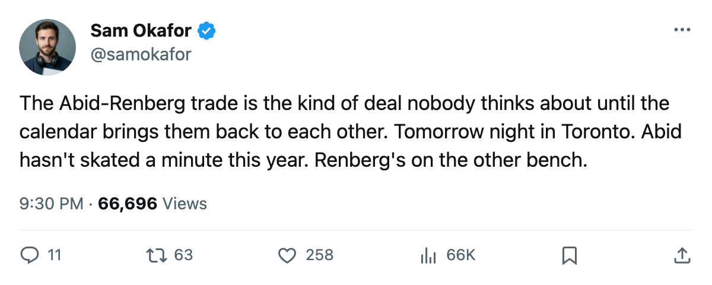
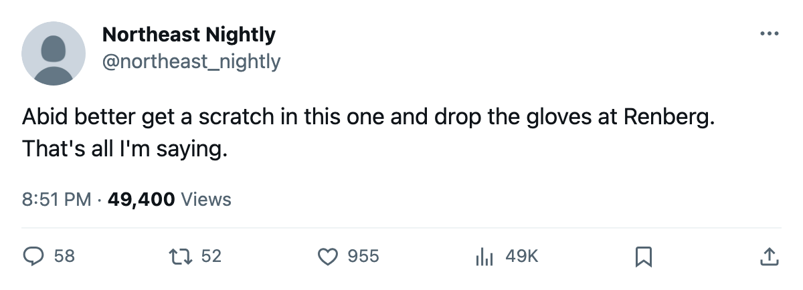

PIT at TOR: the January swap comes due, and Pittsburgh has not scored a goal
Ramzi Abid and Mikael Renberg changed sides on the same date in January. They meet tomorrow, and the Penguins have 0 goals in 1 game.
 Sam OkaforLeafs beat reporter · Queen City Telegram
Sam OkaforLeafs beat reporter · Queen City TelegramPittsburgh arrives in Toronto tomorrow after a 4-0 shutout on its own ice Saturday, its only game so far, and brings 2 men who wore the other sweater 8 months ago.
 Ramzi Abid80 left
Ramzi Abid80 left  Pittsburgh Penguins on 2005-01-25.
Pittsburgh Penguins on 2005-01-25.  Mikael Renberg75 left
Mikael Renberg75 left  Toronto Maple Leafs on the same date. Whether the two names moved in a single transaction is not recorded, but the calendar shows the same day.
Toronto Maple Leafs on the same date. Whether the two names moved in a single transaction is not recorded, but the calendar shows the same day.
Abid has not been dressed in either game this season. He is 80 overall at 25, with a $1.30M salary and 4 years remaining, and a 94 potential the Bureau has not yet converted into ice time.  Jamie Lundmark83, who skated 11.0 minutes on Wednesday, got the call over him.
Jamie Lundmark83, who skated 11.0 minutes on Wednesday, got the call over him.
Renberg, now on the other side, watches his old club sit at 2-0-0, 8 goals for, 1 against.  Shane Willis69 is the only Pittsburgh name on the Bureau's fallers list, at -4 form and 69 overall after 1 game with no points.
Shane Willis69 is the only Pittsburgh name on the Bureau's fallers list, at -4 form and 69 overall after 1 game with no points.
The season series reads 1-0-0 to Toronto, 4-0 in goals.  Roberto Luongo97 stopped everything he faced on Saturday in Pittsburgh. On Wednesday the defence held
Roberto Luongo97 stopped everything he faced on Saturday in Pittsburgh. On Wednesday the defence held  Ottawa Senators to 29 shots against 36 of its own.
Ottawa Senators to 29 shots against 36 of its own.
Tomorrow's game is the second of a short head-to-head before the next meeting on 2005-12-10, when Toronto hosts Pittsburgh at home again. If Abid is dressed for that one, it will be his first shift against Pittsburgh in a Toronto sweater.
Pittsburgh Penguins sits 4th in the Atlantic with 0 points and a 0-1-0 record. Toronto leads the Northeast with 4 points from 2 games. The Toronto Maple Leafs defence has allowed 1 goal across 2 games, the same total  Chicago Blackhawks has after 1 game.
Chicago Blackhawks has after 1 game.

